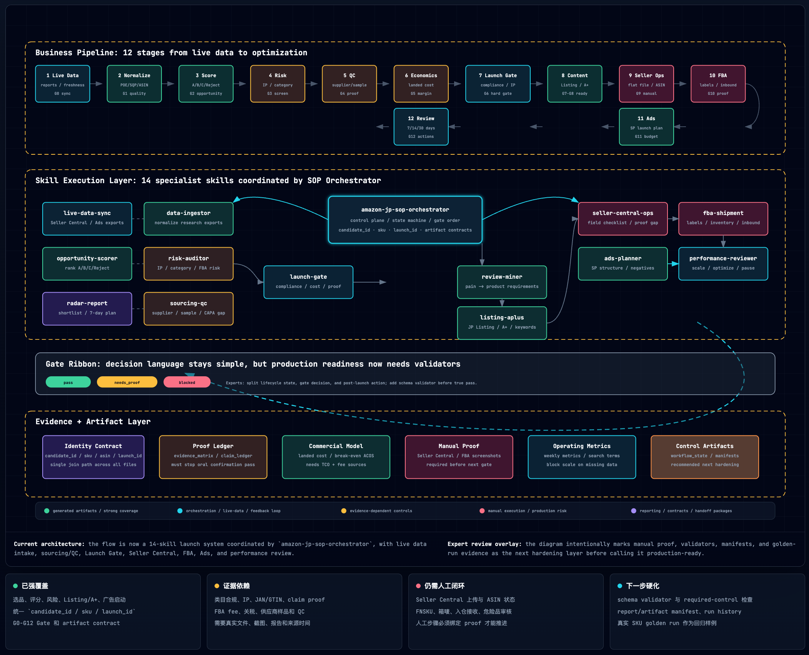

一品一条主线
从第一张表开始保留 candidate_id，成 SKU 后继续补 sku、parent_asin、launch_id。
这不是一张只用来看的流程图，而是一套可执行的工作流。每个候选品都用同一组 ID 串联数据、证据、Listing、广告和复盘；每个阶段必须留下产出物和 Gate 状态，才能进入下一步。
这里直接嵌入固定截图，用它确认全局覆盖：绿色是强覆盖，蓝色是门禁/编排，黄色是证据依赖，红色是需要人工或外部系统执行的环节。

上方图片是已确认的覆盖基线；下方执行表已补齐实时数据、供应商/QC、Seller Central、FBA 和经营复盘模块。
只要遵守这四条，流程就不会变成散乱的“分析报告堆”。每个阶段都能被追踪、复用和复盘。
从第一张表开始保留 candidate_id，成 SKU 后继续补 sku、parent_asin、launch_id。
任何阶段都必须给出 pass、needs_proof 或 blocked，特别是 Listing、FBA、广告前。
合规、功效宣称、认证、成本、毛利、样品 QC 都要进入 evidence_matrix.csv。
搜索词、ACOS、TACOS、评论、退货原因要回到关键词、Listing、A+、产品规格和广告结构。
把它当成项目看板：每一行完成后，把产物放进对应 launch workspace，再让总控更新状态。
导入 Seller Central、Amazon Ads、库存、退货、评论和业务报表。
amazon-jp-live-data-sync
live_data/*.normalized.csvlive_data_quality_note.md输入 POE、SQP、竞品 ASIN、供应商报价、广告搜索词初始数据。
amazon-data-ingestor
normalized/*.csv根据需求、增长、竞争、价格、评分、评论数和风险扣分排序。
amazon-opportunity-scorer
opportunities.csv筛掉品牌垄断、IP、FBA 限制、季节性、退货率和类目风险。
amazon-risk-auditoramazon-radar-report
把报价、样品、评论痛点、包装和 claim proof 变成可验收标准。
amazon-jp-sourcing-qc-planner
supplier_scorecard.csvqc_checklist.csv补真实报价、样品、QC、Keepa 趋势、头程、FBA fee 与目标售价。
外部资料 + amazon-data-ingestor
supplier_quote.csvlanded_cost_model.csv在上架前统一检查类目、GTIN/JAN、IP、标签认证、进口/FBA、claim proof。
amazon-jp-launch-gate
evidence_matrix.csv从差评提炼产品改进点，再生成日文 Listing、A+ 模块、图片简报和关键词主表。
amazon-review-mineramazon-jp-listing-aplus-designer
product_requirements.csvamazon_keyword_master.csv把上市包转成后台字段、flat file、A+ 提交和人工操作清单。
amazon-jp-seller-central-ops
seller_central.checklist.csvseller_central.ops_log.csv计算首批/补货数量，检查 FNSKU、箱规、标签、box content 和断货风险。
amazon-jp-fba-shipment-planner
fba.shipment_plan.csvfba.replenishment_alerts.csv基于关键词主表、盈亏平衡 ACOS、预算和竞品 ASIN 建 Sponsored Products 结构。
amazon-ads-planner
campaigns.csvnegatives.csv每周回收搜索词、广告、库存、评论和退货数据，决定放量、否词、改文案、补货或停测。
amazon-jp-performance-revieweramazon-jp-sop-orchestrator
performance.actions.csvperformance.alerts.csv这 14 个 skills 不是独立报告模板，而是一组可串联的岗位能力。每个 skill 负责一个明确问题，并把产出交给下一阶段。
amazon-jp-sop-orchestrator解决流程散、文件乱、阶段无法追踪的问题。
candidate_id、sku、artifact contract、实时数据与周度复盘入口。amazon-jp-live-data-sync解决运营数据滞后、报表字段分散、广告和库存无法一起复盘的问题。
live_data/*.normalized.csv、数据质量说明和告警输入。amazon-data-ingestor解决 POE、SQP、竞品、供应商报价、广告报表字段不统一的问题。
normalized/*.csv，保留证据字段和可关联 ID。amazon-opportunity-scorer解决“哪个品值得继续验证”的排序问题。
amazon-risk-auditor解决早期选品忽略 IP、合规、FBA 限制、品牌垄断和季节性的风险。
pass、needs_proof、blocked_pending 和风险证据。amazon-radar-report解决机会清单不能转成行动计划的问题。
amazon-jp-sourcing-qc-planner解决供应商、样品、包装和 QC 没有形成可验收证据的问题。
supplier_scorecard.csv、qc_checklist.csv、sample review。amazon-jp-launch-gate解决 Listing、FBA、广告上线前缺少 SKU 级放行判断的问题。
pass、needs_proof 或 blocked 的 launch gate report。amazon-review-miner解决差评只被总结、没有转成产品改进和 QC 要求的问题。
product_requirements.csv、供应商要求、A+ 反驳点和 claim caution。amazon-jp-listing-aplus-designer解决日本站 Listing、A+、图片 brief、关键词主表分散产出的问题。
amazon_keyword_master.csv。amazon-jp-seller-central-ops解决 Listing 包到 Seller Central 实操之间缺少字段、flat file 和人工证明的问题。
seller_central.checklist.csv、seller_central.ops_log.csv。amazon-jp-fba-shipment-planner解决首批备货、标签、箱规、入仓和补货风险靠人工经验的问题。
fba.shipment_plan.csv、补货告警和执行 checklist。amazon-ads-planner解决广告结构、预算、CPC、否词和复盘规则没有统一口径的问题。
campaigns.csv、negatives.csv、30 天优化计划和搜索词回流动作。amazon-jp-performance-reviewer解决上线后只看广告、不联动库存、利润、评论和退货的问题。
performance.actions.csv、告警、scale / optimize / pause / kill。在 ChatGPT/Codex 里按阶段粘贴，替换 SKU、品类、数据文件或表格。每次都要求输出 Gate 结果和缺失证据。
使用 amazon-jp-sop-orchestrator，为候选品 [产品名] 创建 Amazon JP launch workspace。请生成阶段目录、artifact contract、ID 规则，并列出从 raw_data 到 optimizing 的状态机。
使用 amazon-jp-live-data-sync，解析我提供的 Business Report、Search Term Report、库存、退货和评论导出。请统一字段、保留 launch_id / sku / asin，并输出数据质量问题和需要立刻处理的告警。
使用 amazon-data-ingestor 和 amazon-opportunity-scorer，解析我提供的 POE/SQP/竞品/供应商数据。请按 Amazon Japan 跨境电商标准输出 Top N 机会、评分依据、淘汰理由和下一步验证任务。
使用 amazon-jp-sourcing-qc-planner，把供应商报价、样品结果和竞品差评痛点转成 supplier_scorecard、qc_checklist、包装/标签要求和 launch gate 可用的证据清单。
使用 amazon-jp-launch-gate，检查 SKU [SKU] 是否可以进入 Listing/FBA/广告。请基于 evidence_matrix、landed_cost_model、claim ledger 输出 pass / needs_proof / blocked，并列出阻塞项。
使用 amazon-review-miner、amazon-jp-listing-aplus-designer、amazon-ads-planner，为 SKU [SKU] 生成日文 Listing、A+ 模块图文 brief、amazon_keyword_master、SP 广告结构和 30 天优化计划。
使用 amazon-jp-seller-central-ops 和 amazon-jp-fba-shipment-planner，把 Listing 包转成 Seller Central 上传字段、人工操作日志、FBA 标签/箱规 checklist、首批发货数量和补货告警。
使用 amazon-jp-performance-reviewer，基于 weekly metrics、广告搜索词、库存、评论和退货数据，为 SKU [SKU] 输出 scale / optimize / pause / kill 决策，并列出广告、Listing、FBA、QC 的具体动作。
一个 SKU 能不能被团队接手，取决于这些文件是否齐全。缺一个，后续就会靠口头记忆，复盘也会断。
normalized/*.csv、opportunities.csv、竞品 ASIN、关键词种子、风险审计和 radar shortlist。
supplier_scorecard.csv、qc_checklist.csv、sample review、包装要求、标签证据和供应商整改动作。
evidence_matrix.csv、landed_cost_model.csv、claim ledger、产品需求、Listing、A+、图片 brief。
seller_central.checklist.csv、后台操作日志、fba.shipment_plan.csv、标签/箱规 checklist 和补货告警。
amazon_keyword_master.csv、广告 campaign 文件、否词、搜索词反馈、周度指标、告警和下一轮动作。
每次复盘只做三类决策，避免会议变成泛泛讨论。
证据齐、毛利达标、风险可控。进入下一阶段，更新状态机，并保留当前版本产物。
方向可继续，但必须补证据。给负责人、截止时间和所需文件，不允许直接进入广告或 FBA。
类目、IP、合规、毛利或执行条件不可接受。归档原因，可作为反例沉淀到选品规则。